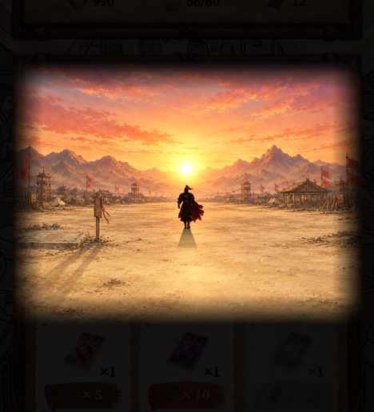
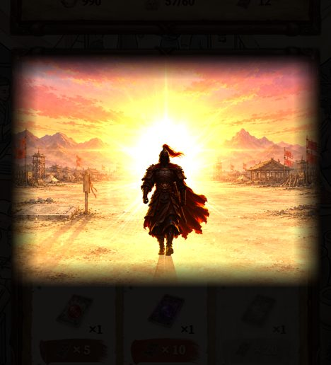
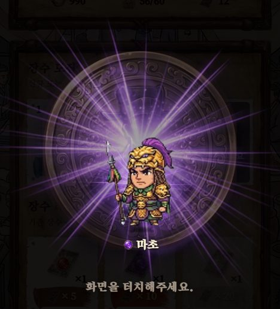
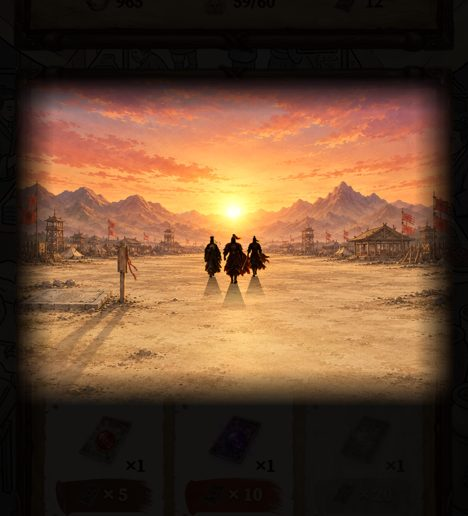
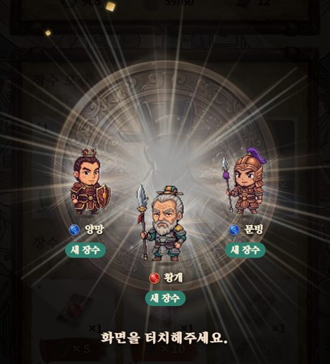
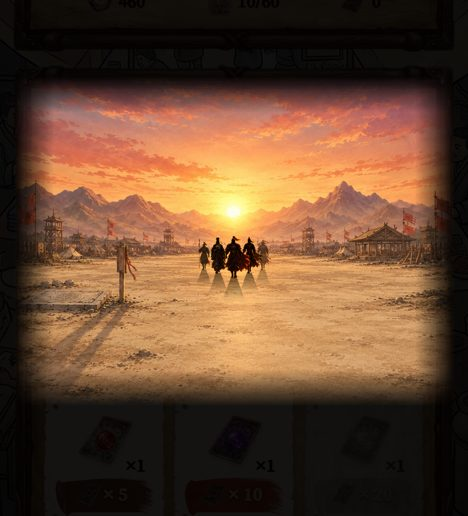
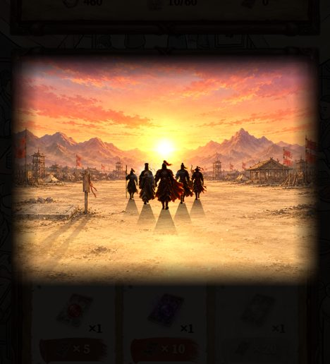
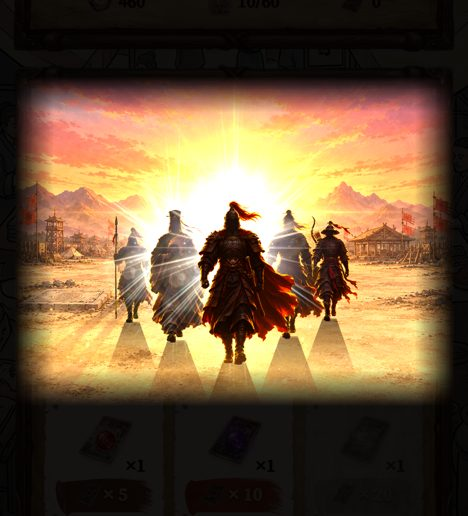
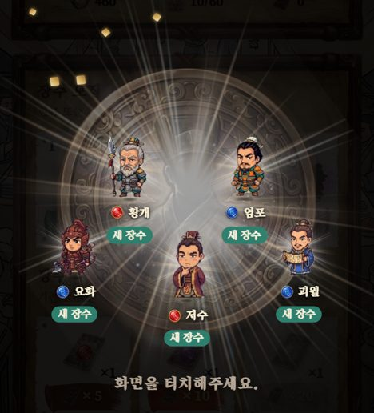

장수 모집 연출
용병 시장 [1 · 3 · 5명 모집] 결과 화면 개편 — 시나리오 초안 · 2026-11-25 · 미결 결정 반영(같은 날)
ic_set_account)을 대장간 모루처럼 흐리게 깔고 그 위에 뽑힌 장수들이 주인공으로 선다.
1. 지금과 바뀌는 것
| 지금 | 바뀐 뒤 | |
|---|---|---|
| 도입 | 1명: 효과음 뒤 섬광(약 2초) 3 · 5명: 세 빛 나선 모음(5초) → 섬광 | 세 경우 모두 「다가오는 장수들」 5초 — 걸어오는 사람 수 = 뽑는 수 |
| 결과 | 붉은 금박 액자 판(DoneModal) 안에 꼬마 + 이름 + 「새 장수」 | 화면 전체 어둠 위 무대(축하 화면 Celebrate의 무대 꼴) — 가운데 문장 + 장수 배치 |
| 단추 | [다시 뽑기 (금화 × n)] · [닫기] | 단추 없음 — [다시 뽑기]는 걷는다. 다른 축하 화면처럼 「화면을 터치해주세요.」 → 아무 데나 누르면 닫힌다 |
| 건너뛰기 | — | 걷는 중에 화면을 누르면 곧장 번쩍으로 |
| 등급 귀띔 | — | A · S · E급이 섞였으면 그 수만큼 실루엣 등 뒤에서 등급 섬광이 비친다(가운데부터 높은 등급) |
| 잉여 카드 모집 | 섬광 없이 붉은 판 | 이번 범위 밖 — 연출을 따로 만든다 |
2. 장면 흐름
시간표 (큰 급 축하와 같은 5초 — 축하음 「쾅」에 번쩍을 맞춘다)
| 시각 | 무엇 | 어떻게 |
|---|---|---|
| 0.0 | 배경이 어두워진다 | 화면 전체 #050608 90%. 축하음(celebrate, 7초) 시작 · 배경 음악 멈춤 — 지금 큰 급 축하와 같다 |
| 0.0–0.4 | 4:3 창이 떠오른다 | 창 = 화면 폭 92% × (폭 × 3/4), 세로 가운데. 가장자리는 부드럽게 — 네 변을 안쪽 12%에 걸쳐 투명으로 번지는 마스크(mask-image, 둥근 사각 그러데이션). 석양 광장 배경이 살짝 크게(1.08배)에서 1.0배로 |
| 0.4–4.2 | 장수들이 다가온다 | 지평선(창 높이 52%)에서 작게(0.22배) 나타나 발밑이 창 아래쪽(창 높이 96%)에 닿을 때까지 커진다(1.0배). 가속 곡선은 「처음 느리고 끝에 빠름」(가까워질수록 크게 자라는 원근). 걸음마다 위아래로 살짝 흔들림(0.5초 한 걸음). 사람마다 출발을 0.15초씩 어긋나게 해 줄이 살아 보이게. 그림자는 CSS로 — 발밑에서 화면 아래로 길게 늘어진 흐린 띠(햇빛을 등지므로) |
| 1.5–4.6 | 석양이 점점 강해진다 | 장수들 머리 위 지평선의 태양 빛(검정 바탕 그림, screen 더하기)이 0.5 → 2.6배로 커지고 밝아진다. 하늘 전체도 함께 밝아짐(배경 brightness 1 → 1.35). 장수 실루엣은 끝까지 검게 — 누군지는 아직 모른다 |
| 4.6–5.0 | 번쩍 | 태양이 창 밖까지 터지며 화면 전체가 흰빛(지금 축하 화면의 하얘지는 끝과 같은 꼴). 5.0초에 「쾅」 |
| 5.0 | 무대가 열린다 | 흰빛이 걷히며 어둠 위 무대. 가운데 계정 문장 + 장수들이 「팡」(아래 3절) |
| 5.0–6.2 | 장수가 하나씩 | 가입 오프닝의 팡처럼 낮은 등급부터 0.18초 간격, 각자 등급 후광(흰 · 자주 · 금)이 터진 뒤 돈다 |
| 6.2~ | 닫기 | 무대 아래 「화면을 터치해주세요.」가 숨 쉬듯 — 아무 데나 누르거나 아무 키나 누르면 닫힌다(다른 축하 화면과 같다). 단추는 없다 |
건너뛰기
걷는 중(0.4–4.6초)에 화면 아무 데나 누르면 곧장 번쩍(4.6초 자리)으로 넘어간다 — 장수 · 태양 · 소리를 모두 그 시각으로 옮긴다 (축하음은 4.6초부터 다시 틀어 「쾅」이 0.4초 뒤에 온다). 번쩍이 시작된 뒤의 누름은 무시하고, 무대가 열린 뒤의 누름은 닫기다 — 같은 누름이 두 번 먹혀 무대를 못 보고 닫히지 않도록 무대가 열린 뒤 0.6초는 누름을 받지 않는다.
등 뒤의 등급 섬광 — 누가 올지 귀띔
뽑기 결과는 연출이 시작되기 전에 서버에서 온다(지금도 결과를 받은 뒤 섬광을 튼다). 그래서 걷기 시작할 때 이미 몇 명이 A · S · E급인지 안다.
- 자리 매기기 — 뽑힌 장수를 등급 순(E > S > A > B > C > D)으로 줄 세워 가운데부터 가장자리 순으로 앉힌다. 5명은 가운데 → 왼쪽 둘째 → 오른쪽 둘째 → 왼쪽 끝 → 오른쪽 끝, 3명은 가운데 → 왼쪽 → 오른쪽. 무대(3절)의 자리도 같은 순서라 걸어온 자리에 그 장수가 선다.
- 섬광 색 — 등급 후광과 같다: E 금 · S 자주 · A 흰 별빛. B · C · D는 섬광이 없다(부대 화면 꼬마 후광
STAND_GLOW와 같은 규칙). - 비치는 꼴 — 실루엣 바로 뒤(실루엣보다 아래 층, 위 몸통 높이)에서 섬광이
screen으로 더해져 어깨 · 머리 둘레로 빛이 새어 나온다. 실루엣 자체는 끝까지 검다 — 누군지는 모르고 「센 장수가 온다」만 안다. - 세기 — 1.5초에 희미하게 켜져 태양과 함께 4.6초까지 커진다(0 → 1). 천천히 돈다(지금 섬광 후광과 같은 회전).
- 그림 — 새로 받을 것 없음. 지금 쓰는 섬광 세 장(
ui/glow-blink.png·-purple·-gold)을 그대로 쓴다.
걸어오는 사람 수와 자리
가운데 한 사람. 창 폭 50% 자리에서 곧장 다가온다.
V자 — 가운데가 반 걸음 앞. 가로 자리 34 · 50 · 66%(끝에서).
지금 오프닝 영상 8번 장면과 같은 줄 — 가로 16 · 33 · 50 · 67 · 84%, 가운데가 가장 앞.
실루엣 다섯 장(창 · 칼 · 부채 든 책사 · 투구 깃 · 활)은 자리마다 고정으로 쓴다 — 1명은 가운데 장(칼), 3명은 가운데 셋. 실루엣의 생김은 뽑힌 장수와 관계없다(누군지는 번쩍 뒤에야 밝혀진다). 다만 자리는 등급 순이고 높은 등급은 등 뒤에 섬광이 비친다(아래).
3. 무대 (번쩍 뒤)
- 가운데 큰 그림 —
assets/icons/ui/control/ic_set_account.png(512², 투명)를public/ui/cel-recruit.png로 굽는다. 대장간 제작 완료의 모루(.frg-done .cel-art-img:brightness(.38) saturate(.6))와 같은 처리 — 진하게 칠하지 않고 어둡게 가라앉혀 장수 뒤의 자리만 잡는다. 무대 폭의 약 80%. - 장수 — 지금 결과 판과 같은 꼬마(
OfficerActionArt, 평상 5초 → 동작) + 등급 후광(Halo, E 금 · S 자주 · 그 밖 흰 별빛, 나타나며 한 번 번쩍). 크기: 1명 무대 폭 42% · 3명 가운데 30% 양옆 26% · 5명 가운데 24% 그 밖 20% · 뒷줄 18%. - 자리 순서 — 등급 높은 장수가 가운데(앞), 그다음이 그 양옆. 5명은 가입 오프닝의 W 대형(가운데 S 1.2배 · 위 줄 1.1배)을 그대로 빌린다.
- 이름 줄 — 꼬마 발밑에 [등급 표] 이름, 그 밑에 「새 장수」 / 「잉여 카드」 표(서버가 준
fates그대로). 이름 글자 하한 0.8rem. - 제목 — 두지 않는다(지금 결과 판도 「뽑았다」는 보면 안다는 기획에 따라 제목 줄이 없다).
- 궁궐이 다 찬 경우 (
exhausted) — 무대 아래 한 줄 그대로.
4. 소리
| 지금 | 1명 cardx1(0.6초부터) · 3 · 5명 모음 뒤 cardx8 |
|---|---|
| 바뀐 뒤 | 세 경우 모두 큰 급 축하음(celebrate, 7초 — 5.0초에 「쾅」) + 발소리(recruit-steps, 0.4–4.2초 — 기획자가 찾아 준다). 사람 수에 따라 겹치는 수를 바꿀지는 소리를 받은 뒤 정한다. 건너뛰면 발소리는 그 자리에서 멎는다 |
5. 그림 목록 (생성형 AI로 뽑을 것)
대장간 · 태학 · 도시 증축 도입부와 같은 방식이다 — 물건은 순수 초록 바탕, 빛은 순수 검정 바탕, 배경은 그대로 받아
tools/build_celebrate_intro.py가 오리고 굽는다. 원본은 assets/icons/ui/celebrate_intro/recruit/에 둔다.
사람 수를 그림으로 나누지 않는다 — 실루엣을 한 명씩 받아 화면이 1 · 3 · 5명을 고른다(세 벌을 따로 받으면 구도가 서로 안 맞는다).
| 파일 | 바탕 | 크기 | 쓰임 |
|---|---|---|---|
| recruit_bg.png | 그림 그대로 | 1600×1200 (4:3) | 석양 광장 — 사람 없음, 가운데 길이 비어 있다 |
| recruit_walker_1~5.png | 순수 초록 | 768×1280 (세로) | 역광 실루엣 장수 한 명씩, 정면으로 걸어오는 자세 |
| recruit_sun.png | 순수 검정 | 1024×1024 | 지평선 태양의 둥근 빛 · 빛살 — 점점 커진다 |
| recruit_flash.png | 순수 검정 | 1024×1024 | 번쩍 — 화면을 덮는 큰 섬광 |
| recruit_dust.png 선택 | 순수 검정 | 1024×576 | 발밑에서 이는 금빛 먼지 · 역광 입자 |
6. 생성형 AI 프롬프트
공통: 참조 이미지로 opening_1.png(배경) · opening_8.png(실루엣)를 붙이면 화풍이 맞는다. 영어 프롬프트가 대체로 결과가 안정적이다.
6-1. 배경 — recruit_bg.png
Wide 4:3 landscape painting, Three Kingdoms era Chinese military encampment plaza at sunset, viewed from ground level looking toward the horizon. A wide empty dirt-and-sand courtyard leads straight from the foreground to the horizon; the center path is completely empty (no people, no animals). Low sun sitting just above distant layered mountains at the exact horizontal center, warm orange-gold sky with pink and violet clouds, wooden palisade, small tiled-roof barracks and red war banners on both sides near the horizon, a stone drill platform and a wooden signpost on the left middle ground. Long soft shadows falling toward the viewer. Painterly semi-realistic digital illustration, soft brush texture, warm cinematic backlight, atmospheric haze near the horizon. Same art style and palette as the reference image. Horizon line at about 52% of the image height. No people, no text, no watermark, no frame, no vignette.
참조: opening_1.png · 1600×1200
6-2. 실루엣 장수 다섯 — recruit_walker_1~5.png (한 장에 한 명씩, 다섯 번)
Single full-body figure of a Three Kingdoms era Chinese general walking straight toward the camera, front view, mid-stride, strongly backlit by a setting sun behind him so the figure is a near-black silhouette with a thin warm golden rim light on the edges of armor and hair. Face and details are hidden in shadow (unrecognizable). [VARIANT] Feet fully visible at the bottom, whole body inside the frame with some margin, figure centered. Background: perfectly flat pure chroma green (#00FF00), no gradient, no ground, no cast shadow, no floor reflection. Painterly semi-realistic style matching the reference image. No text, no watermark.
[VARIANT] 자리에 하나씩 넣는다:
| 1 | Heavy lamellar armor, long spear held upright in the right hand, round helmet with a tall tassel. | 왼쪽 끝 (5명) |
|---|---|---|
| 2 | Scholar-strategist in long flowing robes and a tall official hat, holding a feather fan at chest height. | 왼쪽 둘째 (3 · 5명) |
| 3 | Broad-shouldered commander with a cape blowing to one side, sword sheathed at the hip, helmet with a long plume. Slightly larger and more imposing than the others. | 가운데 (1 · 3 · 5명) |
| 4 | Lean swordsman in light armor, long straight sword held low in one hand, topknot hair. | 오른쪽 둘째 (3 · 5명) |
| 5 | Archer in light armor with a longbow over the shoulder and a quiver on the back, wide-brimmed helmet. | 오른쪽 끝 (5명) |
참조: opening_8.png · 768×1280 · 다섯 장 모두 같은 카메라 높이 · 같은 빛 방향으로(같은 대화에서 이어 뽑으면 맞추기 쉽다)
6-3. 태양 빛 — recruit_sun.png
A glowing setting sun as pure light on a perfectly flat pure black background (#000000): a bright white-gold core, a soft warm orange halo fading outward, and fine thin light rays radiating in all directions, subtle lens glow. Centered, symmetrical, nothing else in the image. No horizon, no clouds, no landscape, no text.
6-4. 번쩍 — recruit_flash.png
An intense radiant burst of white-gold light on a perfectly flat pure black background (#000000): blinding white center, sharp long star-like rays and a wide soft glow that almost fills the whole square, cinematic flare. Centered, symmetrical, light only. No objects, no text.
6-5. 먼지 (선택) — recruit_dust.png
Backlit golden dust particles and fine sand haze drifting in warm sunset light, wide horizontal band, on a perfectly flat pure black background (#000000). Light and particles only, soft and sparse. No ground, no objects, no text.
7. 만드는 자리 (구현 메모)
- 굽기 —
tools/build_celebrate_intro.py의ITEMS에 recruit 줄들(bg = photo · walker = green · sun/flash/dust = black). 문장은cel-recruit.png로. - 도입부 —
Celebrate의intro에recruit를 더한다. 다른 도입부와 달리 사람 수(1 · 3 · 5)를 받는다. 그 밖(5초 · 하얘지는 끝 · 「쾅」 · 무대)은 큰 급 그대로. - 무대 —
art에 문장, 장수 배치는children(새 꼴.rcr-stage). 지금 결과 판(PullResult, [다시 뽑기] 포함) · 모음(CelebrateCharge) · 섬광(BurstStage)은 모집에서 빠진다. - 자리 · 섬광 — 등급 순 자리 매기기는 함수 하나(걷는 창과 무대가 같이 부른다 — 따로 셈하면 걸어온 자리와 선 자리가 갈린다). 섬광 색은
STAND_GLOW. - 건너뛰기 — 도입부가 누름을 받아 시각을 4.6초로 옮긴다(축하 화면은 지금 모으는 동안 누름을 안 받으므로 도입부 갈래 하나에만 연다).
- 검사 —
tools/market_ux.ts의 모집 결과 검사를 새 무대(data-modal="reveal"유지)로 옮기고, 걸어오는 사람 수 = 뽑은 수를 본다.
8. 결정 (2026-11-25 기획자)
| # | 물음 | 결정 |
|---|---|---|
| 1 | [다시 뽑기]를 둘까? | 없앤다 — 단추 없이 아무 데나 누르면 닫힘(다른 축하 화면과 같다) |
| 2 | 5초 도입을 매번 보는 번거로움 | 걷는 중에 화면을 누르면 곧장 번쩍으로 (2절 「건너뛰기」) |
| 3 | 발소리 효과음 | 넣는다 — 소리는 기획자가 찾아 준다 |
| 4 | 잉여 카드 모집도 이 연출로? | 아니다 — 잉여 카드는 연출을 따로 만든다 |
| 5 | 높은 등급을 미리 귀띔할까? | 한다 — 높은 등급이 가운데부터 서고, 등 뒤에서 등급 섬광(E 금 · S 자주 · A 흰 별빛) (2절 「등 뒤의 등급 섬광」) |
생성 이미지(5절) · 발소리(walking_edit.mp3)를 받아 같은 날 구현했다 — 아래 9절.
9. 시험 결과 (2026-11-25 구현)
shots/에 있다.
발소리는 화면으로 확인할 수 없어 겹치는 간격 · 크기를 숫자로만 맞췄다 — 직접 들어 보고 알려 주기.
직접 해 보기
- 개발 서버 둘 —
npm run dev(5173) ·npm run server-api(8787). - 로그인 → 장터 → [용병 시장] → [1명] · [3명] · [5명] 중 하나 (금화 · 궁궐 빈자리가 있어야 눌린다).
- 걷는 중에 화면을 누르면 곧장 번쩍으로 · 무대가 뜨면 아무 데나 눌러 닫기.
- 자동 확인 —
node --experimental-strip-types --env-file=.env tools/market_ux.ts(1 · 3명 · 건너뛰기 · 자리 · 섬광까지 본다).
1명 — S급(마초)이 와서 등 뒤가 자주색



3명 — A급 하나가 가운데, 그 등 뒤만 흰 별빛


5명 — A급 둘이 가운데 두 자리, 흰 별빛




자동 확인 (tools/market_ux.ts)
| 무엇 | 결과 |
|---|---|
| 걸어오는 실루엣 수 = 뽑은 수 | 통과 (1 · 3) |
| 높은 등급이 가운데부터 · 무대도 같은 자리 | 통과 — 예: 3명 「0:B 1:A 2:B」 |
| 자리마다 등 뒤 섬광 = 등급(A 흰 · S 자주 · E 금 · 그 밖 없음) | 통과 — 1명 S급 자주 · 3명 「- 흰 -」 |
| 걷는 중에 누르면 곧장 번쩍 → 무대 | 통과 — 누른 뒤 무대까지 약 0.86초(대기 0.4초 + 확인 도구의 기다림) |
| 무대가 열린 직후의 누름은 넘김 | 통과 |
| [다시 뽑기]가 없다 | 통과 |
| 금화 · 새 장수가 풀에 든 수 | 통과 |
| 5명 | 시험 계정의 빈자리가 4라 자동 확인 밖 — 따로 한 번 찍어 눈으로 봤다(위) |
첫 확인 뒤 고친 것 (같은 날, 기획자)
- 다가오기 — 연속으로 다가오던 것을 정지 장면 넷(크기 .22 · .36 · .58 · 1)이 0.35초 디졸브로 넘어가게 바꿨다(오프닝 영상처럼). 장면은 약 1초씩 머문다. 위 사진은 바꾸기 전이다.
- 새 장수 — 초록 알약 대신 노란 말풍선(일기토 말풍선4 꼴)에 검은 굵은 글씨, 머리 오른쪽 위. 글은 짧게: 한국어 「새 장수」 · 영 · 일 「NEW」 · 스페인 「NUEVO」 · 이탈리아 「NUOVO」 · 포르투갈 「NOVO」 · 몽골 「ШИНЭ」 · 중국 「新」.
- 섬광 하나 — 무대의 문장 뒤 큰 빛줄기를 걷고 장수 뒤 후광만 남겼다.
- 배경 음악 — 연출 동안 「장터의 노래」가 실제로는 계속 나고 있었다: 붙듦 표지는 섰는데, 첫 조작에 곡을 트는 길(
unlock)과 곡을 트는 약속(play())이 붙듦을 안 보고 소리를 다시 올렸다. 둘 다 붙듦을 보게 고쳤다 — 축하 화면 · 고유기술 연출에도 같이 걸린다. 확인 도구가 이제 「걷기 · 무대 동안 곡이 멈춤 → 돌아오면 다시」를 소리 요소의 상태로 본다.
구현하며 바꾼 것 · 남은 것
- 실루엣 그림자 — 처음엔 밝은 삼각형처럼 보여 흐리고 옅게(곱하기 섞기) 바꿨다.
- 옛 뽑기 섬광(
BurstStage)은 이제 쓰는 곳이 없다 — 잉여 카드 연출을 따로 만들 때 쓸 수도 있어 남겨 두었다. - 원본 그림을 다시 받으면
python tools/build_celebrate_intro.py로 다시 굽는다(문장은npm run ui).